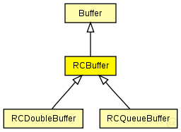

This documentation is released under the Creative Commons license
This documentation is released under the Creative Commons licenseRepresents an abstract Buffer for rate-constrained traffic. Messages are sent using the configured bandwidth allocation gap.
The RCBuffer registers a timer (SchedulerTimerEvent) at the scheduler module (TTEScheduler) to send its Message in conformance with the BAG account.
WARNING: Do not instantiate the module. Use RCDoubleBuffer or RCQueueBuffer instead! Only the bag parameter is currently used!
TODO: The RCBuffer module should be converted to an interface since it should not be used directly in simulation.
See also: RCDoubleBuffer, RCQueueBuffer, Buffer, SchedulerTimerEvent, TTEScheduler
Author: Till Steinbach
The following diagram shows usage relationships between types. Unresolved types are missing from the diagram. Click here to see the full picture.
The following diagram shows inheritance relationships for this type. Unresolved types are missing from the diagram. Click here to see the full picture.
| Name | Type | Description |
|---|---|---|
| CTBuffer | simple module |
Abstract base Buffer used for critical traffic Buffers of TTEthernet. Since this is an abstract module please do not instantiate it |
| Name | Type | Description |
|---|---|---|
| RCDoubleBuffer | simple module |
Represents a double buffer for rate-constrained traffic. Messages are sent using the configured gandwidth alocation gap. |
| RCQueueBuffer | simple module |
Represents a queue buffer for rate-constrained traffic. Messages are sent using the configured gandwidth alocation gap. |
| Name | Type | Default value | Description |
|---|---|---|---|
| destination_gates | string | "" |
Priority of the buffer (currently only used for rate-constrained traffic) int priority=default(-1); Critical traffic ID of the buffer int ct_id=default(0); Critical traffic marker of the buffer int ct_marker=default(0); Critical traffic mask of the buffer int ct_mask=default(0); Comma seperated list of gates where the frames of the buffer are delivered |
| priority | int | -1 |
Priority of the buffer (currently only used for rate-constrained traffic) |
| ct_id | int | 0 |
Critical traffic ID of the buffer |
| ct_marker | int | 0 |
Critical traffic marker of the buffer |
| ct_mask | int | 0 |
Critical traffic mask of the buffer |
| max_dispatch_delay | int | 0 |
Not used |
| bag | int | 0 |
Bandwidth allocation gap in number of ticks (Changes to this parameter will get active for future frames only) |
| jitter | int | 0 |
Not used |
| Name | Value | Description |
|---|---|---|
| display | i=,orange | |
| class | RCBuffer |
| Name | Direction | Size | Description |
|---|---|---|---|
| in | input |
The buffers Input |
|
| out | output |
The buffers Output WARNING: CURRENTLY NOT USED! |
|
| schedulerIn | input |
Input gate for the incoming SchedulerTimerEvent messages |
| Name | Title | Source | Record | Unit | Interpolation Mode |
|---|---|---|---|---|---|
| txPk | TX Packets | count, vector | |||
| latency | End-to-end latency | stats, histogram, vector | s |
// // Represents an abstract Buffer for rate-constrained traffic. Messages are sent using the configured // bandwidth allocation gap. // // The RCBuffer registers a timer (SchedulerTimerEvent) at the scheduler module (TTEScheduler) to send its // Message in conformance with the BAG account. // // @warning Do not instantiate the module. Use RCDoubleBuffer or RCQueueBuffer instead! // Only the bag parameter is currently used! // // @todo The RCBuffer module should be converted to an interface since it should // not be used directly in simulation. // // @see RCDoubleBuffer, RCQueueBuffer, Buffer, SchedulerTimerEvent, TTEScheduler // // @author Till Steinbach simple RCBuffer extends CTBuffer { parameters: //RCBuffer is implemented by the RCBuffer C++ Class @class(RCBuffer); @display("i=,orange"); // Not used int max_dispatch_delay = default(0); // Bandwidth allocation gap in number of ticks (Changes to this parameter will get active for future frames only) int bag = default(0); // Not used int jitter = default(0); gates: //Input gate for the incoming SchedulerTimerEvent messages input schedulerIn @directIn; }
This documentation is released under the Creative Commons license